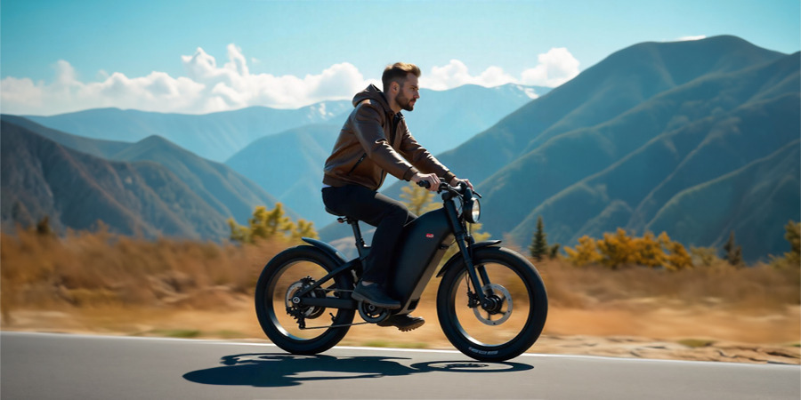
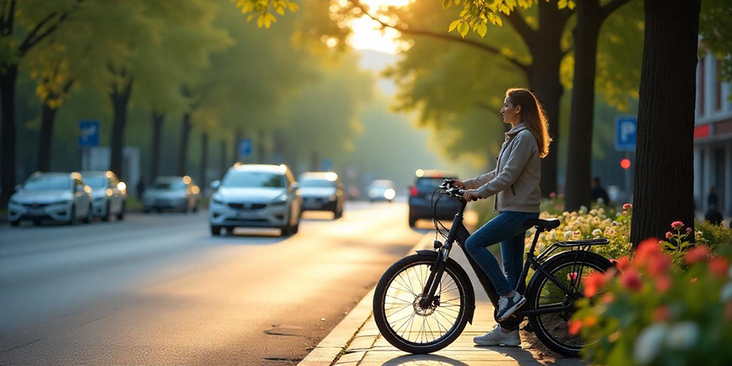
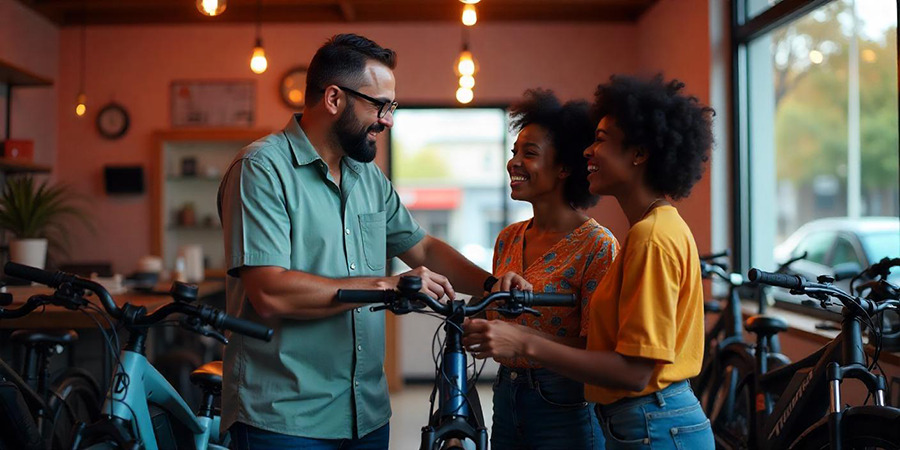

Rólunk
Az E-bike blog azért jött létre, hogy bemutassuk, hogyan forradalmasítja az elektromos kerékpár a közlekedést. Segítünk eligazodni a modern technológiák világában, és megosztjuk a legjobb tippeket azoknak, akik szeretnének környezetbarát és hatékony közlekedési eszközre váltani.

Az E-Bike Előnyei
Az elektromos kerékpárok számos előnnyel rendelkeznek a hagyományos biciklikkel és más közlekedési eszközökkel szemben. Könnyebb közlekedés, alacsonyabb környezeti terhelés és hosszabb utak kisebb erőfeszítéssel - csak néhány azok közül, amiért érdemes váltani.

E-Bike Típusok
Az E-bike-ok különböző típusai közül választhatunk, attól függően, hogy városi közlekedéshez, terepezéshez vagy hosszabb túrákhoz szeretnénk használni. Nézzük meg a legnépszerűbb modelleket és válaszd ki a számodra legjobbat!
